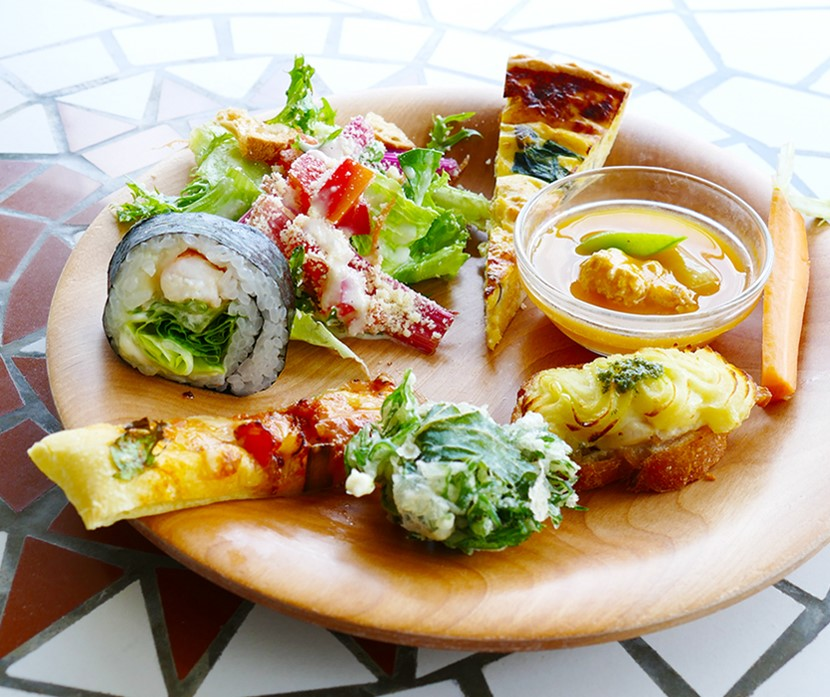

calender

20代の頃、仕事の関係で宮崎の多くの農家さんに出会う機会がありました。
その中で、自然農法で農薬や化学肥料を使わずに作物を育てる農家さんの価値ある努力と情熱に触れました。
また、その価値が消費者に正しく伝わっていないことに気付き、そんな信念を持った農家さんたちの食材に
本当の価値をつけて消費者に届ける事が出来ないかと考えました。

そこで、宮崎の平和台公園でオーガニックレストラン「sizen」を開業することを決意しました。
あまり知られていませんが、平和台公園は緑豊かな森の公園で、いつも鳥のさえずりの聞こえる自然豊かな素晴らしい場所です。
そうして頭の中で色々考えていると、ふとひらめいたんです！
この緑豊かな公園の中で、大好きな農家さんの本物の食事を楽しんでもらえるレストランを作ったらとても素敵！と。
これが、オーガニックレストランsizenのストーリーのはじまりです。